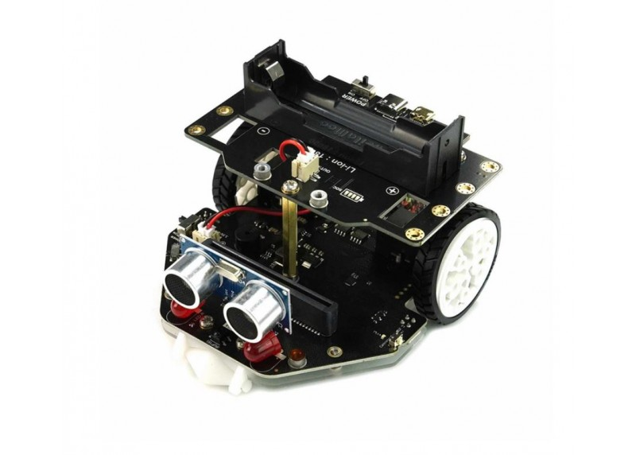

Motores y ruedas
Avance, retroceso, giros y regulación de velocidad.
Aprende a montar, programar y probar el Maqueen Plus V2 con 16 prácticas completas. Cada misión incluye materiales, instrucciones paso a paso, bloques orientativos, tres retos explicados y evaluación.

Avance, retroceso, giros y regulación de velocidad.
Siguelíneas con calibración y distancia por ultrasonidos.
Radio, circuitos, esquiva y pruebas de tiempo.
Selecciona una misión de la lista.
Comprueba la versión exacta serigrafiada en el chasis: la biblioteca Maqueen Plus V2 es diferente de las extensiones antiguas de Maqueen. La foto aportada no permite verificar todos los detalles de hardware ni la alimentación.